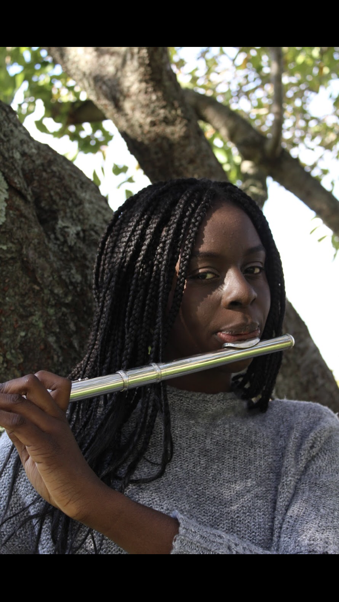
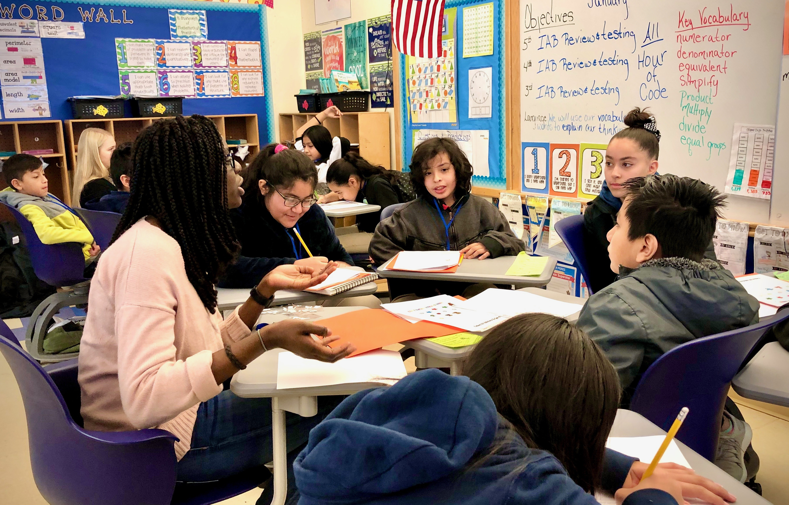
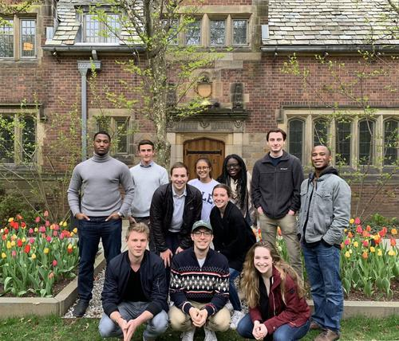

Music is a big part of my life. I have been playing the flute since third grade, the piccolo since 7th grade, and have also played saxophone and clarinet throughout the years. Serving the community is also important to me, so during the summers I volunteer in my hometown's concert band, and teach incoming 4th graders how to play the flute. I play the flute year-round in the Yale Concert Band!

Recently, I joined Yale Code Haven, a club that is a perfect combination of my love for computer science, teaching and giving back to the community. Every Friday morning, our team goes to a 5th grade classroom in New Haven and teaches computer science concepts!
I also enjoy being a member of my dorm's student council, as we get to plan events, design gear items, and volunteer at events in New haven!
